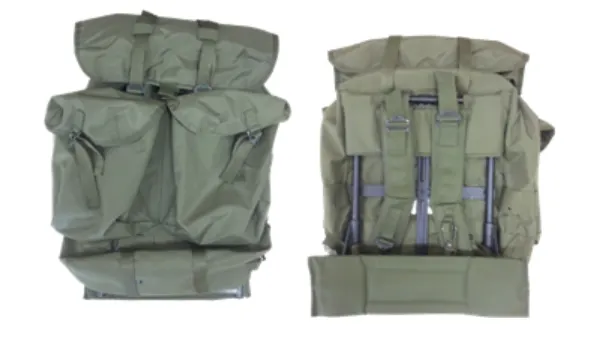
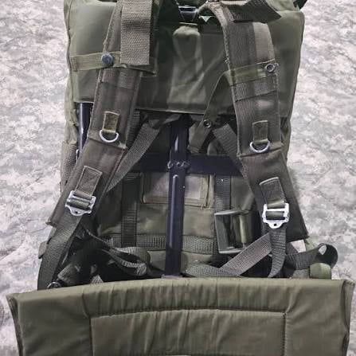
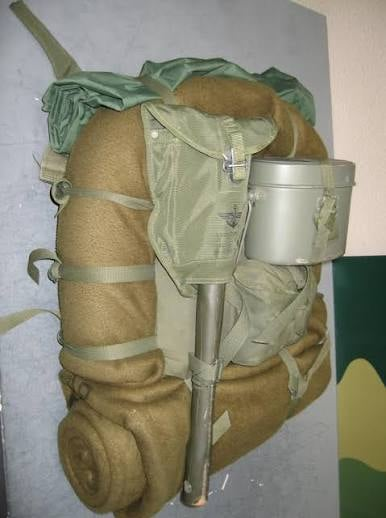
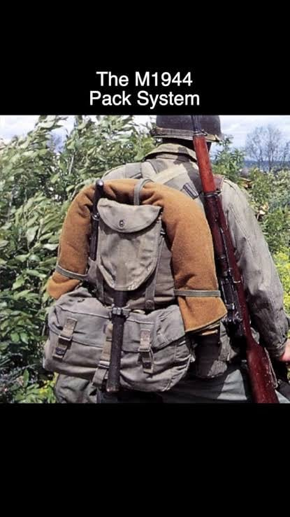
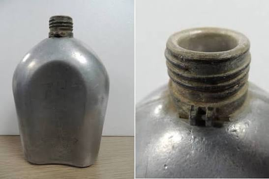
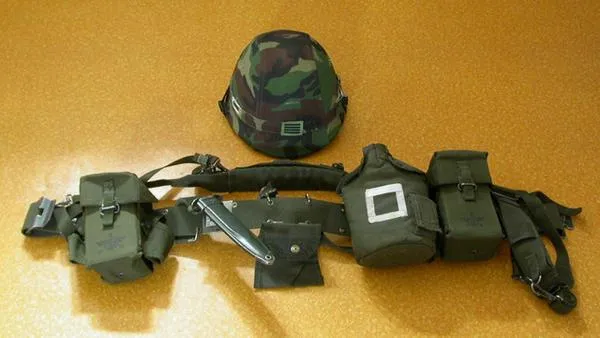
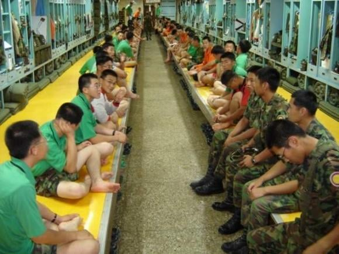
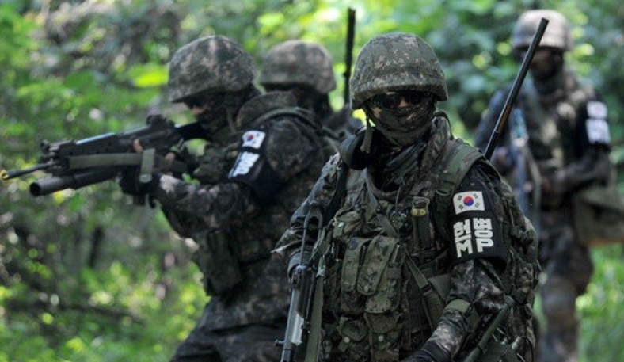
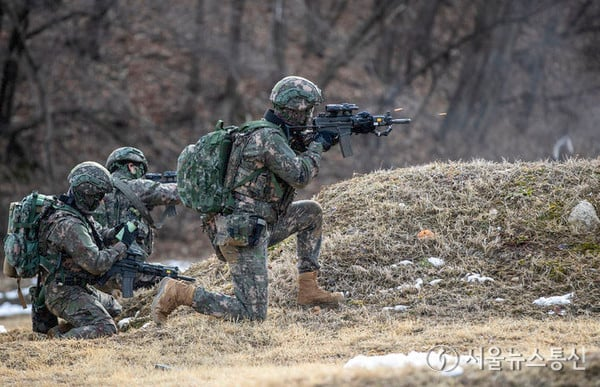
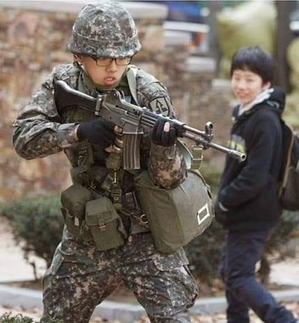

https://www.dogdrip.net/732552752

지금 개드립올라간 시금치 배낭보고 당연히
신형일거라 생각하다가 존나 놀란게

제 1야수단 운전조교라 후방에서 근무 했던 나는
이게 내 신형 군장이었음
믿거나 말거나 16군번으로 입대해서 2018년 전역 전에 이거 비닐 뜯음
그럼 원래는 뭘 썼냐면

이거 씀 ㅋㅋㅋㅋㅋㅋㅋㅋㅋㅋㅋㅋ
모포가 외부로 노출되게 만들어진 디자인인데
원래 완전군장 기준으로는 저 밑에 예비 전투화까지 묶어야함

나중에 알아본 결과 이 물건의 정체는 한국전쟁시절도 아닌
무려 2차 세계대전 당시 운용된 M-1944 필드팩의 카피제품 이었던 거임
그래서 그런지 금속 체결부가 녹슬다 못해 거칠게 당기면 뻥튀기 처럼
퍼서석 하면서 부러짐
진짜 구라가 아니라 바람이 너무 많이 불면
커버 같은곳이 흔들리다가 검정고무신 교복처럼
찢어져 날아가버리는 경우도 있었음
넘어지면 뭐 거의 확정으로 찢긴다고 보면 됨

여기에 더 해서 우리는 진짜 6.25 시절 수통 썼음
보통 6.25 수통이라 부르는게 90년대 제일금속 생산품을
착각한 사람들도 많은데 우린 진짜 1953 적힌 물건이었음

여기에 구구형 방탄헬멧이랑 엑스반도 없이
요대에 탄알집 + 수통만 결속한게 군장 전부임

아무리 싸우지 않는 후방부대라지만 좀 심하긴 했음
녹색 관물대에 20인 침상 생활관 이었으니까
이게 그냥 군대인가 보다 하고 살다가 존나 깜짝 놀란적이 있는데

분대장 교육대 들어가서 최전방 한번 올라가보니까
무슨 스타워즈에나 나올법한 장비를 입고있는 사람들이 있어서
처음에는 무슨 비밀 특수부대인줄 알았다 ㅋㅋㅋㅋㅋㅋ

헬멧도 존나 멋있게 생긴걸 쓰고 있고
총에 배그에서 보던 스코프같은것도 달려있고 엑스반도는 커녕
뭔 신기하게 생긴 조끼에 주렁주렁 달고 다니던데
같은 군인이었는데도 와.. 군인이다 소리가 나오더라

이미 10년도 지난 이야기지만 솔직히 좀 아쉽긴 함
사나이로 태어나서 저런 간지나는것도 좀 입어보고 싶고 그랬는데
그냥 다 떨어져가는 천조각 입고 군인 흉내 내다 온 느낌이라
진지하게 말하는건데 국방 민원으로 근무 부대 해당사실 공유해줘라
당장에 군수상태 최신화인지 확인해달라고